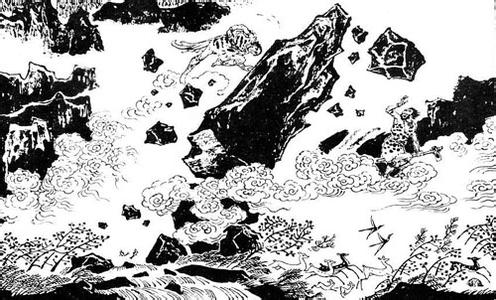

共工怒触不周山的传说故事. 共工怒触不周山是一个著名的上古神话传说。. 又名共工触山，且与女娲补天、后羿射日、嫦娥奔月并称中国古代著名的四大神话。. 共工，又称共工氏，是中国古代神话中的水神，掌控洪水。. 在中国先秦古书《列子·汤问》中记载，传说共工素来与颛顼不合，发生惊天动地的大战，最后以共工失败而愤怒地撞上不周山而告终。. 这一传说反映了远古部族间的斗争，同时涉及到古代天文学上的“盖天说”。. 盘古开天辟地女娲造人之后，水神共工一向与火神祝融不合，他向火神发动进攻。. 担当先锋的大将相柳、浮游，猛扑火神祝融氏居住的光明宫，把光明宫四周长年不熄的神火弄灭了。. 大地顿时一片漆黑。
